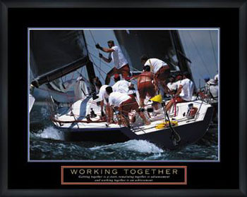

Pairing and Giving Feedback
The Pairing Experience
A little background:
I can work for hours in complete solitude and focus for long periods of time and actually enjoy the process. I also find that most times, when finished it is like coming up for air and I seek out companionship. In many cases to discuss what I have recently learned or designed - my wonderful/poor wife. At the same time I tremendously love working with, being challenged by, being encouraged by, and the exchange of seeing another's perspective and having the opportunity of articulating mine. Both approaches are extremely rewarding and fulfilling. In reviewing the past, I find that I spend about half of my working/creative time in both categories.
DBC Pairing
I have enjoyed working on the challenges and being stretched. It is awesome when an idea/solution comes to mind that is elegant and it is transformed into code, producing the desired affect. However, it is a rush to work with others who have the same goal of revolutionizing their lives and enhancing the lives of those around us.
All of my pairing sessions have been very rewarding, both intellectually and emotional. It is fun to build something with another person, see their point of view. It is also beneficial to have your own idea and then be presented a different idea and see their idea as a linked yet unique in approach. I really like the protocol that DBC has put in place. I find it very freeing and helpful to ask how the other person is doing, to get to share where you are at the moment, to ask how they would like to proceed, and decide on initial driver/navigator roles.
Speaking to vulnerability, in one of my pairings I felt like I was a little off, a bit behind, and kind of slow. This was not fun. I felt at many times like I needed to apologize and did. I also felt like I needed to make it up. I then realized that this happens to all of us and that I was being to hard on myself. This approach improved my performance and our session.
Writing Feedback
Every time I read my feedback, I am a tiny bit nervous - people are critiquing me in an area where I am fairly new. I have received almost all positive feedback, which has worked to encourage me and drive me. I noticed that all people I have worked with, enjoyed working with me. They felt that I listened and offered my opinion. It has also been mentioned that I am curious and enjoy looking for multiple approaches and that it is less about the right way than various ways. I have enjoyed working with all of the people with whom I have paired. I feel like all of the Boots that I have worked with are ready to take it to the next level.
In one feedback, my peer offered the same feedback that he gave himself, that is to "...add a little structure and planning…". Ever since this feedback, I have emailed my pair and asked what specifically they would like to work on or accomplish. I can see the benefits already.
In giving feedback, I have tried very hard to adhere to the Specific, Actionable, and Kind rule.
Specific: The writer should be focused on details instead of generalities
Actionable: The writer should be focused on comments that describe the interaction in such a way that the recipient could take action and work toward change.
Kind: The writer should be focused on the truth, on ways for the recipient to gain wisdom from your words - not just warm feelings.
I enjoyed writing the feedback, because I enjoyed working with each of Boots in my peer-pairing. I am looking forward to working with them in San Francisco.
I did find that to be kind and speak the truth in kindness, without all the niceness required mental discipline. I have worked on using this approach in my daily interactions and have found it to bear fruit.
The Future
I am energized about working with others in San Francisco, however, I wonder if I benefit others as much as I will be benefitted.
Here's to us Boots!